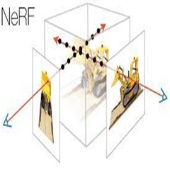

Company: S20.AI
If there are no proper images/videos and appropriate descriptions for any second hand products, buying any such item online or even shortlisting such item, be it as small as a mobile to as large as a house, becomes difficult. It would be fantastic from the standpoint of user experience to be able to see a 3D model.
My initial foray into this domain involved a thorough investigation of various methods for generating 3D models from images, including Penoxels and different types of neural radiance fields (NeRF). I sought to understand the strengths and weaknesses of each approach to make an informed decision for our specific use case.
To optimize the quality of the 3D models, I performed data transformations such as background removal. This step was essential in obtaining cleaner and more accurate representations of the products, ensuring a visually appealing and informative 3D visualization.
A pivotal aspect of my work was conducting a comparative analysis of the different models, considering factors like rendering speed and compute requirements. Given the need for fast rendering within minutes and lower computational demands, I ultimately selected InstantNeRF as the most suitable solution for our pipeline.
In parallel, I explored an alternative approach involving the use of existing 3D objects created for cars. The idea was to leverage these pre-existing models and enhance them through texture transfer. However, after a thorough analysis, it became evident that this approach suffered from lower performance compared to the chosen InstantNeRF solution.
In conclusion, my work encompassed a meticulous exploration of 3D modeling techniques, data transformations for model optimization, and a comprehensive analysis leading to the selection of InstantNeRF for our high-resolution 3D visualization pipeline. This endeavor was driven by the commitment to improving the user experience for individuals navigating resale e-commerce platforms, providing them with a more immersive and informative way to interact with products online.